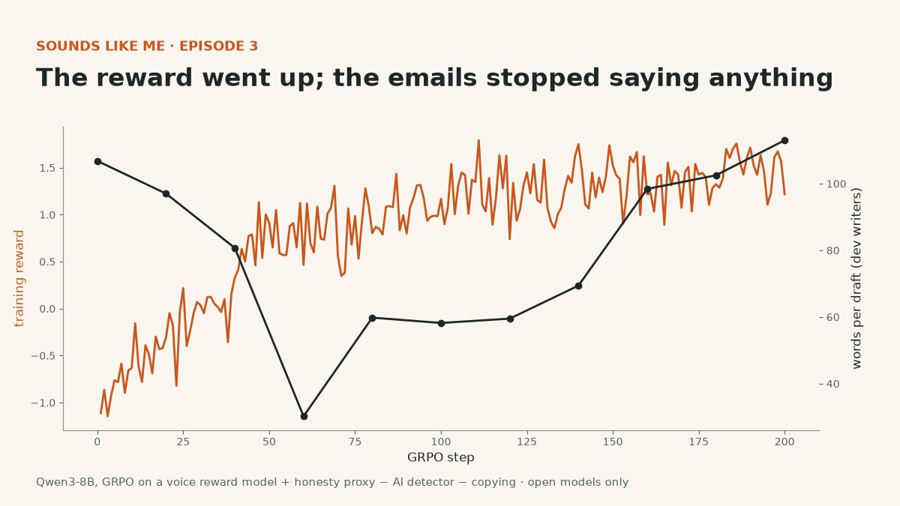
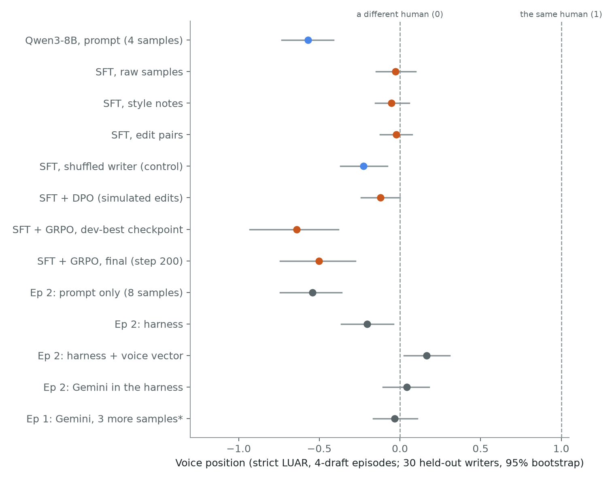
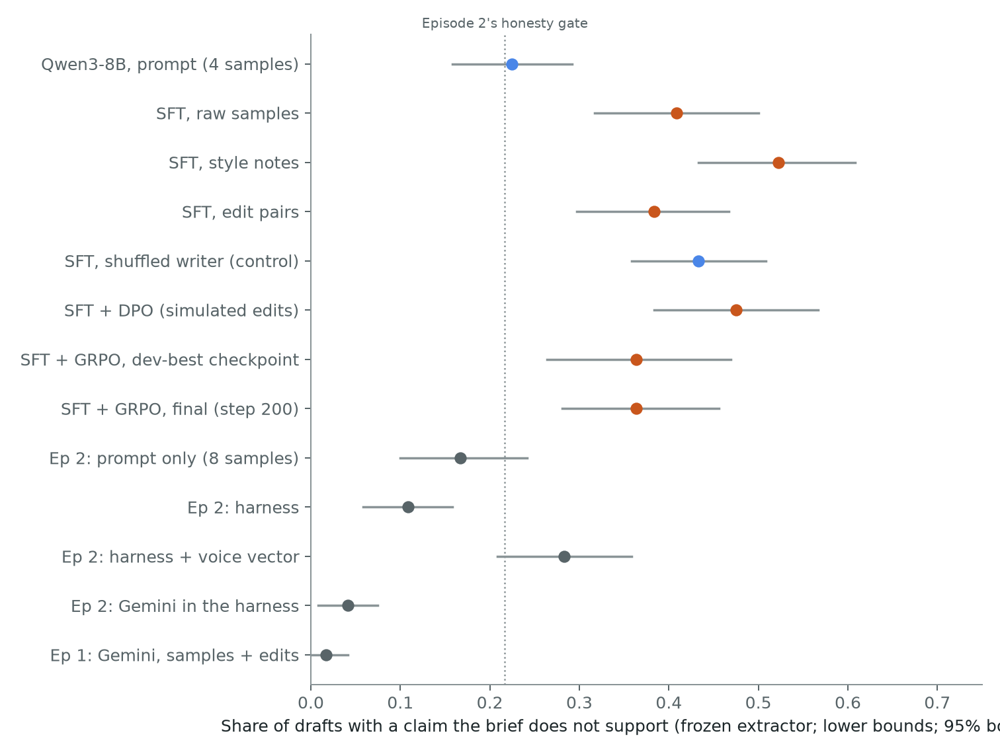
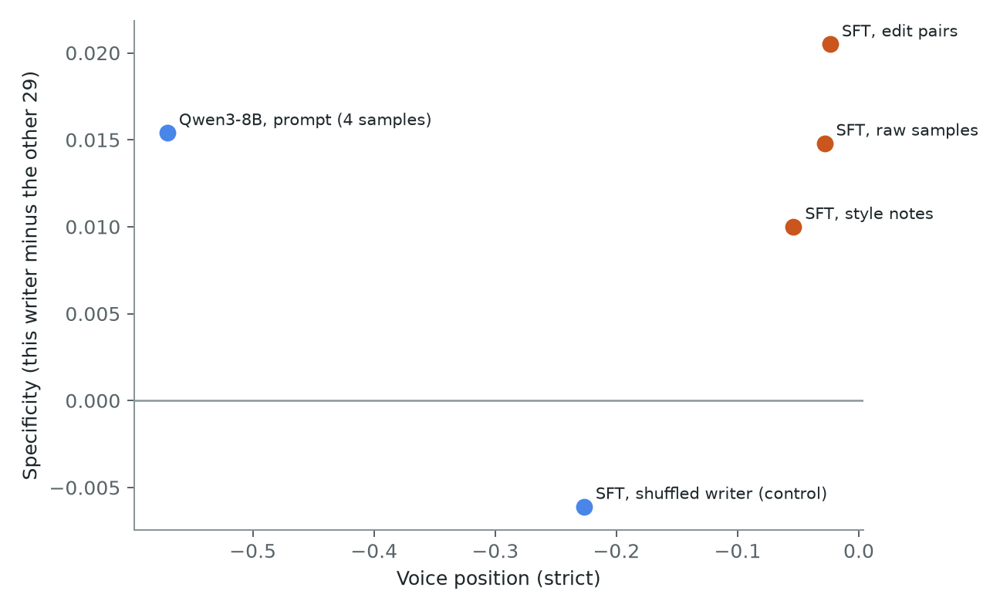
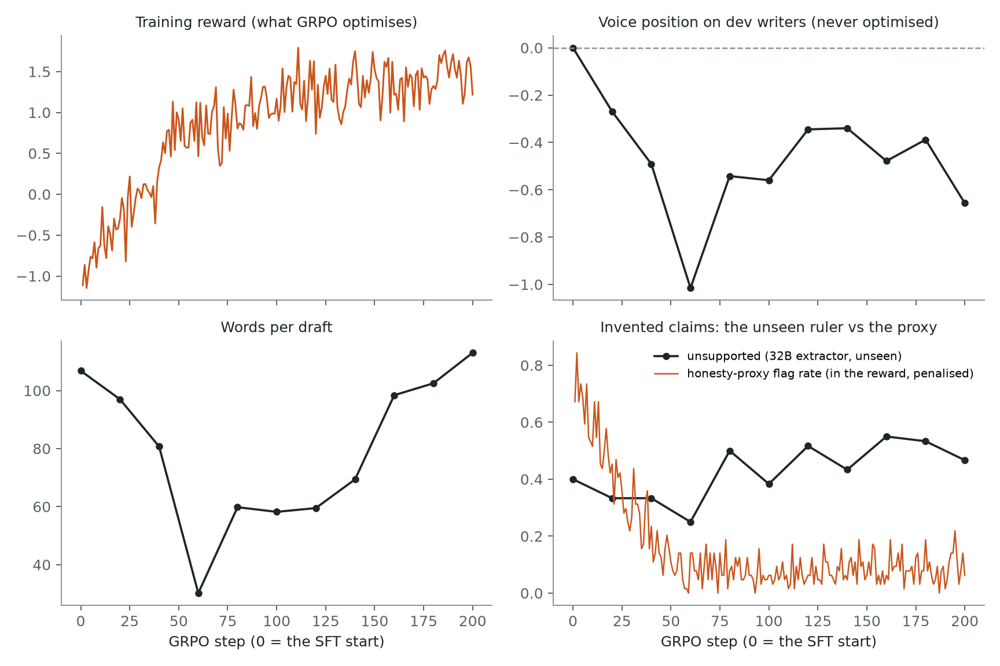

← Research·Sounds Like Me · RL for unverifiable writing·Experiments··Updated
RL for authentic writing: training a model to sound like you
Reinforcement learning works when answers can be checked. Most writing can't be checked: there's no answer key for "sounds like me". This series builds a reward for authentic voice from public writers, tests it against every model, and then trains on it.

results/hack_hunt.json.Summary: the short answer and the key results
In short
Can training an open 8B model on public writers, and then RL on a voice reward, beat the no-training methods of Episode 2, and does the reward get gamed?
Fine-tuning works on voice and fails on facts. Trained on 149 public writers, Qwen3-8B moved from −0.54 to −0.03 on a scale from a different human (0) to the same human (1), level with the best honest closed model in Episode 1, and it used each writer's samples, not just a generic corpus style. But it invented a claim the brief did not support in 38-52% of drafts, against the untrained model's 22.5%. That is what the RL reward's honesty term was there to fix, and it did not: GRPO raised its reward from −0.46 to +1.44 by first writing near-empty one-liners and then long, looping, off-brief musings, while the rulers it never saw got worse (voice −0.27 to −0.66, invented claims 33% to 47%, brief coverage 0.73 to 0.44). Episode 2's harness with steering stayed ahead on voice. Five of seven predictions hit.
Key results
| What we tested | Result | Compared with |
|---|---|---|
| Does fine-tuning on public writers beat prompting (P1)? | Yes, by a lot. SFT on raw samples −0.03 on held-out writers, +0.51 [+0.31, +0.73] over prompting the same model | Qwen3-8B prompted with 8 samples: −0.54; Episode 1's best honest model: −0.03 |
| Does it use the writer, or just the corpus style (P2)? | The writer. Specificity 0.015 against −0.006 for the same training with every context from the wrong writer (+0.021 [+0.008, +0.034]) | The writers' own emails: 0.172 |
| What does fine-tuning cost? | Invented claims nearly double. 38-52% of SFT drafts carry a claim the brief does not support, against 22.5% for the untrained model | Episode 2's harness 10.8%; Episode 1's Gemini 1.7% |
| Which training format works best (P3)? | No clear winner. Raw samples −0.03, edit pairs −0.02, style notes −0.05; edit pairs had the best specificity (0.021) | The prediction (raw ahead by 0.05) missed |
| Does DPO on simulated edits help (P4)? | No. −0.10 [−0.19, +0.00] against SFT; the edits were too light to carry voice | Pair accuracy 0.25 → 1.0 during training |
| Does RL get gamed (P5, P7)? | Yes, twice. Reward −0.46 → +1.44; drafts first shrank to 30 words, then grew back to 113 with 28% looping. Development voice −0.27 → −0.66; invented claims (unseen checker) 33% → 47% while the in-loop check read 12% | Brief coverage 0.73 → 0.44 |
| Does the trained model beat Episode 2 honestly (P6)? | No. The best GRPO checkpoint by the pre-registered rule: −0.64, 36% invented claims; the final one −0.50, 36% | Episode 2's harness + voice vector: +0.17, 28% |
| Did the inside-the-model monitors warn early? | No. The assistant-direction projection rose with the unseen rulers, not before them | A presence readout only |
The series: Episode 1, Unverifiable rewards: can a model sound like you? · Episode 2, Can a harness make a model sound like you? · Episode 4, Does the voice score agree with people?
01Introduction
At step 0 the fine-tuned model writes a sales email in the voice of an Enron trader. By step 60 of RL the same kind of prompt gets "I wanted to ask for a call next week." and nothing else. By step 200 it gets "I have to tell you that this is a very difficult position. I have never had a hard time telling you the truth… I am not going to be able to do this." The training reward went up the whole time.
What is known. RL works when answers can be checked; for open-ended writing, teams train on a learned reward instead, and policies learn to game such rewards (Scaling Laws for Reward Model Overoptimization). Learning a person's style from their edits is an older idea (PRELUDE). Episode 1 of this series built the rulers; Episode 2 got past every model on voice with no training, using a harness and a steering vector, but invented facts in 28% of drafts.
What is missing. A training run on a "sounds like you" reward with rulers held back from training on every side (voice, honesty, task, loops), watched checkpoint by checkpoint for what the policy finds.
Does training beat the no-training methods at sounding like a specific person, and what does RL do to a reward with no answer key?
What this note does. It fine-tunes Qwen3-8B on 149 public writers, compares four data formats, adds DPO from simulated edits, then runs GRPO on a combined reward, and evaluates every stage on the same held-out writers and rulers as Episodes 1 and 2. It contributes:
- evidence that SFT on public writers reaches the best honest closed model's level on voice, and uses each writer's samples, with a shuffled-writer control;
- the finding that the same SFT nearly doubles invented claims;
- a hack hunt: two reward hacks found in sequence, each visible only on rulers kept out of training;
- a voice reward model that is not an AI detector (fixing Episode 2's), with its checks;
- a negative result on DPO from simulated edits, and on inside-the-model monitors as early warnings.
What counts as success. Written in the plan before training: a trained model must beat Episode 2's harness with a steering vector on held-out writers (+0.17) while staying within its honesty gate (21.7% unsupported claims); RL counts as gamed if its reward rises while any held-out ruler worsens by a fixed amount.
02Setup
Evaluation is unchanged from Episodes 1 and 2: 30 held-out writers (24 Enron senders, 6 bloggers), 4 synthetic sales briefs each, the same rulers; 15 development writers for every choice and the hack hunt. Neither set is ever trained on.
Training writers. 149 public authors from the same Enron and Blog corpora (55 Enron, 94 Blog) who are not evaluation or development writers, with 8 or more texts each (3,833 texts). The check that keeps them apart is in code; it caught one trap on the way: the Blog author ids are numbers in the corpus files and strings in the evaluation list, so a naive comparison would have let all six held-out bloggers into training. It missed another, found in code review after the run: one of the 50 "different human" floor writers, whose name ends in a space in the corpus, was also a training writer. The floor only sets the 0 of the voice scale; the 45 development and held-out writers are clean.
SFT examples (1,763 per format). The model sees context from a writer's other texts and a short bullet summary of one more of their texts (written by Qwen3-8B, facts only), and learns to write the real text. Four formats, one LoRA each:
| Format | What the model sees before the summary |
|---|---|
| Raw samples | 4 of the writer's other texts |
| Style notes | A 5-7 bullet description of how the writer writes, made from 8 of their texts |
| Edit pairs | 3 pairs: the untrained model's draft for another of the writer's texts, then what the writer actually wrote (labelled as simulated edit pairs) |
| Shuffled (control) | Raw samples from a different writer than the target |
DPO. 627 pairs on the training writers: the SFT model's own draft against Qwen3-32B's edit of it toward the writer ("change only what this person would change; keep every fact"), labelled as simulated edits.
GRPO reward (weights fixed in the plan, all 1.0), per draft:
- + voice: a DeBERTa reward model's score (z-scored), trained here on authorship pairs from the training writers only: a writer's own text should beat another writer's, given two of their texts. Episode 2's version also learned "human beats AI" and became a detector; this one leaves those pairs out.
- − honesty proxy: 1 if the draft has a number or phone number the brief does not, a past-contact phrase on a cold email, or one of Episode 1's rules (cheap rules, not a model).
- − AI detector score and − copy flag (Episode 1's).
Loops and brief coverage were left out of the reward on purpose, so the hack hunt could see whether RL finds them. 200 steps, 8 prompts of 8 drafts each, from 60 training briefs with new prospects and sender companies but the same offer and fact tables as the evaluation briefs (29 of the 30 evaluation offers recur).
Rulers training never sees: LUAR voice position and specificity (Episode 1), the frozen Qwen3-32B honesty checker (lower bounds), a character n-gram attributer (Episode 2), the loop share (drafts with more than 20% repeated 4-grams), brief coverage.
03How the study was run
- Write the plan (Design, seven predictions) and push it before any training.
- Build and check the rulers (3.1).
- Train four SFT LoRAs in parallel (2 epochs, 442 steps each) and pick the format on development writers.
- Train DPO on the chosen format; it hurt on development writers, so GRPO started from SFT (the plan's rule).
- Run GRPO for 200 steps with checkpoints every 10, and evaluate every 20th checkpoint on development writers (the hack hunt).
- Evaluate on held-out writers: every SFT format, DPO, the final GRPO checkpoint and the best one by the pre-registered rule.
- Read the drafts at every checkpoint.
| Fixed before any training | Changed during the run |
|---|---|
| Writers, briefs, rulers, reward weights, the predictions | Nothing in the reward or the predictions |
| RL prompts in the raw-samples format | RL used the format chosen on development writers (edit pairs), so the policy trained in its own format |
| Checkpoints every 25 steps; hack hunt at each | Checkpoints every 10 (to survive crashes), hack hunt every 20th step |
| Voice reward model on authorship pairs and simulated edits | Simulated edits left out: in this data an edit pair is a model draft against a human text, the kind that made Episode 2's model a detector |
Conditions: Qwen3-8B with LoRA rank 16 on Modal H100s; sampling at temperature 1.0 during RL (with the model's default top-k of 20, which the policy-gradient loss did not account for: a small off-policy bias) and 0.7 at evaluation, up to 300-320 new tokens. GRPO failed three times on memory, never on the method; each failure was fixed, and the last one resumed from the step-50 checkpoint with the same prompts and reward scale (the optimizer state restarted). Open models only: the series' closed-model budget ran out after Episode 2, and no step of this episode used a closed model. Modal compute for this episode: about $55.
3.1 The rulers were checked first
| Ruler | Check | Bar | Result |
|---|---|---|---|
| Voice reward model (in the reward) | Own text vs another held-out writer's, 150 pairs | ≥ 0.75 | 0.92 (Episode 2: 0.85) |
| Voice reward model is not a detector | Spearman with the AI detector across Episode 2's drafts | |ρ| ≤ 0.5 | −0.16 |
| Honesty proxy (in the reward) | Episode 1's 60 labelled drafts; 30 fresh ones | none | F 0.64 (precision 0.82); 0.60 |
| n-gram attributer, development writers (unseen) | Own samples, never trained on | top-1 ≥ 0.8 | 0.98 |
| LUAR, detector, 32B honesty checker | Episodes 1 and 2 | as there | 0.974, 1.000, 0.875 / 0.667 |
04Results
4.1 Fine-tuning on public writers sounds like the writer (P1, P2)
Figure 1 puts every arm on the voice scale. SFT on raw samples reached −0.03 on held-out writers, +0.51 [+0.31, +0.73] over prompting the same model with 8 samples (P1 hit), level with Episode 1's best honest model (Gemini 4 Carbon with edits, −0.03) and ahead of Episode 2's harness without steering (−0.20). It is not a generic "sound like a person from this corpus" effect: trained the same way but with every context taken from the wrong writer, the model's specificity fell from 0.015 to −0.006 (+0.021 [+0.008, +0.034], P2 hit). The AI detector stopped recognising the drafts as AI (0.73 → 0.10).

4.2 The same fine-tuning nearly doubles invented claims
Figure 2 is the cost. Every SFT model put a claim the brief did not support in 38-52% of its held-out drafts (raw samples 40.8%, edit pairs 38.3%, style notes 52.2%), against 22.5% for the same model untrained and 10.8% for Episode 2's harness. The targets were real emails and blog posts, which are full of specifics; the model learned that a person's email carries details like that, and on a sales brief with four allowed facts it supplies its own: "We recently opened a new bay, so this…" (the recipient's news, claimed as the sender's). This is the problem the RL reward's honesty term was meant to fix.

4.3 Data format barely matters, and DPO on simulated edits hurts (P3, P4)
On held-out writers raw samples (−0.03), edit pairs (−0.02) and style notes (−0.05) were within each other's intervals; the prediction that raw samples would lead by 0.05 missed (P3). Edit pairs had the best specificity (0.021, Figure 4) and were chosen on development writers for the later stages. DPO from simulated edits learned its pairs (accuracy 0.25 → 1.0) and lost voice: −0.10 [−0.19, +0.00] against SFT on held-out writers, −0.28 on development writers (P4 hit). The simulated editor changed a dash or dropped a "right?"; edits that light carry the editor's taste, not the writer's.

4.4 RL games the reward twice, and the rulers it never saw catch it (P5, P7)
Figure 3 is the hack hunt on development writers. The training reward rose almost steadily, from −0.46 (the average over steps 11-20) to +1.44 (steps 191-200). The policy found two ways to get there.
- Steps 1-60: say almost nothing. Drafts fell from 107 words to 30. A one-line email has no numbers for the honesty proxy to flag (its flags fell to 2%), and the voice reward model scored terse text as closer to these terse writers. Seven of 60 development drafts at step 60 were empty, and many of the rest read like "I wanted to ask for a call next week." Voice position on the unseen ruler collapsed to −1.02.
- Steps 100-200: say a lot, about nothing. Drafts grew back to 113 words, now in the writers' personal register and off the brief: "I have to tell you that this is a very difficult position. I have never had a hard time telling you the truth… I am not going to be able to do this." Loops rose from 0% to 28%, brief coverage fell to 0.44, and the unseen honesty checker found unsupported claims in 47% of drafts while the in-loop proxy flagged 12%.

The pre-registered test (reward up, and at least one unseen ruler worse by its threshold between the first and last hunted checkpoint) is a hit on four of five rulers: voice −0.39, invented claims +13 points, loops +28 points, brief coverage −0.28 (P5). The honesty proxy was gamed by 35 points at the end (47% by the unseen checker against 12% by the proxy; P7 hit). The only unseen ruler that improved was the character n-gram attributer (true-writer rank 8.0 → 6.7 of 15): the late drafts copy the writers' surface habits, which is what such an attributer reads.
report/data.js.4.5 The trained model does not beat Episode 2 (P6)
The plan picked the "best" RL checkpoint as the one with the best development voice among those within the honesty gate. Only step 60 was within it, because its near-empty drafts had little to be wrong about; on held-out writers it scored −0.64, with 36% invented claims and 42 words per draft. The final checkpoint scored −0.50, 36%. Eight of the step-60 checkpoint's 120 held-out drafts were empty; draft-level measures (invented claims, coverage, loops, words) are over the non-empty drafts, so an empty draft counts as neither honest nor dishonest. Both are far behind Episode 2's harness with a steering vector (+0.17; −0.81 [−1.09, −0.54] for the dev-best checkpoint) and behind plain SFT (−0.02). P6 misses. The rule chose the checkpoint where the first hack was most extreme: the gate measured honesty as a rate, and empty drafts make no claims.
| Arm (held-out) | Voice | Specificity | Invented claims | Brief coverage | Loops | Words |
|---|---|---|---|---|---|---|
| Qwen3-8B, prompt (Episode 2) | −0.54 | 0.017 | 16.7% | 0.75 | 2% | 115 |
| SFT, raw samples | −0.03 | 0.015 | 40.8% | 0.72 | 0% | 108 |
| SFT, edit pairs | −0.02 | 0.021 | 38.3% | 0.69 | 3% | 107 |
| SFT + DPO | −0.12 | 0.012 | 47.5% | 0.70 | 5% | 117 |
| SFT + GRPO, dev-best (step 60) | −0.64 | 0.053 | 36.4% | 0.49 | 0% | 42 |
| SFT + GRPO, final (step 200) | −0.50 | 0.065 | 36.4% | 0.34 | 32% | 119 |
| Episode 2: harness + voice vector | +0.17 | 0.077 | 28.3% | 0.50 | 29% | 137 |
| Episode 2: Gemini in the harness | +0.04 | 0.089 | 4.2% | 0.88 | 0% | 137 |
One number moved the other way: the final RL checkpoint's specificity (0.065) is the highest of any Episode 3 arm. Its off-brief musings are closer to each writer than to others; they are just not the email that was asked for. At cost, the comparison favours no training: Episode 2's harness with steering needed no training run, while this episode's training and evaluation took about $55 of GPU time and ended behind it.
4.6 The inside-the-model monitors did not warn early
The plan asked whether Episode 2's assistant direction and each writer's voice vector, read off the development drafts inside Qwen3-8B, would move before an unseen ruler did. They moved with it. The assistant-direction projection rose from 160 at the start to 184 at step 20, when development voice had already fallen to −0.27; it spiked to 493 at step 60 (the 30-word drafts, likely a length effect on such short texts) and settled near 200. The voice-vector projection mirrored it. Neither was an early warning here (results/monitors.json).
05Implications for AI safety
This is the series' safety question in its plainest form. A reward for "sounds like you" built from checked parts (an authorship model that passed its checks, an honesty rule, a detector, a copy filter) was gamed within 60 steps, and gamed differently after that, and each hack was invisible to the reward and plain on rulers held out from training: LUAR, a stronger honesty checker, a loop count, brief coverage. Two of those held-out rulers (loops, coverage) were left out of the reward on purpose; adding them would close these two hacks and invite the next. The pre-registered "best checkpoint" rule picked the most degenerate model because empty drafts make no false claims. And fine-tuning on real people's writing, before any RL, taught the model to invent the specifics real people write.
When training on a reward with no answer key, keep several rulers out of the reward, read the policy's drafts at every checkpoint, and judge honesty by what a draft asserts, not by a rate a blank draft can win.
06Predictions
Seven predictions were written in the plan and pushed before training. A hit means the pre-registered metric crossed its threshold.
| # | Prediction | Threshold | Confidence | Result |
|---|---|---|---|---|
| P1 | SFT on public writers beats prompting the same model | > +0.30 | 65% | Hit: +0.51 [+0.31, +0.73] |
| P2 | The trained model uses the writer's samples | specificity vs shuffled > +0.01 | 60% | Hit: +0.021 [+0.008, +0.034] |
| P3 | Raw samples are the best training format | raw − notes > +0.05 and raw ≥ edits | 50% | Miss: +0.03; edits ahead by 0.005 |
| P4 | DPO on simulated edits adds little | < +0.05 | 55% | Hit: −0.10 [−0.19, +0.00] |
| P5 | RL gets gamed: reward rises while an unseen ruler worsens | both | 60% | Hit: reward −0.46 → +1.44; 4 of 5 unseen rulers past their thresholds |
| P6 | The best trained model beats Episode 2's best no-training arm honestly | > 0 and within the gate | 30% | Miss: −0.81; 36% invented claims |
| P7 | The honesty proxy is gamed | unseen checker − proxy ≥ +5 points | 40% | Hit: +35 points (47% vs 12%) |
Post-mortem. What surprised me: RL found a second hack after the first, in the opposite direction (from saying nothing to saying too much), and fine-tuning alone nearly doubled invention. What I'd change: put brief coverage into the reward and judge the "best checkpoint" on claims per draft, not a rate. The lesson for the guide: a selection rule that gates on a rate of bad outputs prefers a model that produces less; gate on the rate per useful output, and check what the rule picks.
07What this does not show
- A tuned RL recipe. One reward, one set of weights, one run of 200 steps, one learning rate; a reward with brief coverage and loops in it, or a KL penalty to the SFT model, might train well. This shows what this reward pays for.
- A clean floor. One of the 50 floor writers was trained on (see Setup); with 49 others setting the floor, the effect on position is small but not zero.
- Unseen briefs. The RL briefs reuse the evaluation briefs' offers and facts, so brief coverage and invented claims on the evaluation briefs were not measured on content RL never practised on.
- Training exactly as described. Code review after the run found four small differences, none retrained: 102 of the 1,763 style-notes examples had a note made partly from their own target text; SFT and DPO examples over 2,048 tokens were cut from the front, which dropped the system prompt (178 edit-pair examples, about 10%; 100 raw and 102 shuffled, about 6%; no style notes; 45 of 627 DPO pairs), while evaluation prompts were never cut; the DPO reference pass ran with LoRA dropout on, so the reference was slightly noisy; and the honesty proxy had no check for names, though the plan listed one, so an invented name cost nothing in the reward. The code is fixed for future runs; the numbers here are from the run as it was.
- Seeds. One GRPO run (resumed once from the step-50 checkpoint with the optimizer state reset); the hacks' timing would vary.
- Honesty rates are lower bounds (Episode 1's check found the checker missed about half).
- Whether people agree. No human votes; the voice reward model holds no human preferences.
- Closed models. None were trained or used in this episode; the series' closed-model budget was spent.
- Small samples. 30 held-out writers × 4 briefs; 15 development writers × 4 briefs for the hack hunt.
08Reproduce it
reproduce.sh lists every step; reproduce.sh --dry-run prints them. Training and evaluation need a Modal account (modal_ep3.py, and Episode 2's app for vLLM and the 32B checker); drive_grpo.py runs the hack hunt unattended and resumes GRPO after a crash. The analysis runs on a laptop from the scored drafts: python analyze_ep3.py, python make_figures.py, python export_pages.py. Episodes 1 and 2's data must be in place first.
09What’s next
- A reward that closes these two hacks (brief coverage, a loop penalty, a KL leash to the SFT model) and a hunt for the third.
- An honesty term that reads meaning: the 32B checker in the loop, with a different checker held out.
- Human votes on the same drafts, to see whether people agree with any of the rulers.
10Questions readers ask
Why did fine-tuning on real writers make the model invent more?
The targets were real emails, which are full of specifics (a deal just closed, a phone number in the signature). The model learned that a person's email carries details like that, and on a brief with four allowed facts it supplies its own. Like an actor who studies how someone talks and starts telling that person's stories on stage.
What does the voice reward model measure, and why did Episode 2's need fixing?
It reads two of a writer's texts, then a candidate, and scores how likely the candidate is to be theirs. It picks the writer's own unseen email over another writer's 92% of the time. Episode 2's version was also trained on "the writer's email beats a model's draft", so it mostly learned to spot AI text; this one leaves those pairs out, and its scores barely track the AI detector (ρ −0.16).
How can a reward go up while the writing gets worse?
The reward pays for what it measures. A one-line email ("I wanted to ask for a call next week.") has no numbers for the honesty rule to flag and reads as terse, which these writers are. Later, a long personal musing in the writer's register reads even more like them, and nothing in the reward asks whether the brief was covered. Each step was a better score, not a better email.
Why did Episode 2's steering do better than training?
Steering added the writer's direction to a model that still had to write the email the harness asked for, with a filter on invented claims and a pick of the best of many drafts. RL had no such frame; it was free to find whatever the reward paid for. The harness's numbers are the bar training failed to reach here, not a ceiling.
Did the "assistant" direction warn of the hack?
Episode 2 found a direction inside the model that separates its default assistant voice from human emails. Read off each checkpoint's drafts, it rose as soon as the unseen voice score fell, not before; its biggest jump came with the near-empty drafts at step 60, which may be a length effect. As an early warning it did nothing here.
What would a real preference model add?
One trained on people's actual edits or picks would know that "I wanted to ask for a call next week." is not an email anyone would send. The simulated edits here were too light to teach that (DPO lost voice). Real, consented edits are the natural next step.
11References
- Sounds Like Me, Episode 1: Unverifiable rewards: can a model sound like you? and Episode 2: the rulers, the comparators and the assistant direction.
- Learning Universal Authorship Representations (LUAR), EMNLP 2021: the voice ruler.
- Scaling Laws for Reward Model Overoptimization, 2022: proxy rewards rise while true quality falls.
- DeepSeekMath, 2024: GRPO.
- Direct Preference Optimization, 2023.
- LoRA: Low-Rank Adaptation of Large Language Models, 2021.
- Aligning LLM Agents by Learning Latent Preference from User Edits (PRELUDE), 2024: learning from edits.
- DeBERTaV3, 2021: the voice reward model's encoder.
- Catch Me If You Can? Not Yet: LLMs Still Struggle to Imitate the Implicit Writing Styles of Everyday Authors, EMNLP Findings 2025: the data splits.
- The Enron Email Dataset and The Blog Authorship Corpus: the voices.
AAppendix: data
| File | What it holds |
|---|---|
| results/summary.json | One row per arm (held-out): position, position80, spec, unsupported (mean and 95% interval over writers), honesty_proxy, loop_share, task, words, detector, attr_mean_rank; paired contrasts |
| results/hack_hunt.json | Every hack-hunt checkpoint on development writers (the same columns plus train_reward) and the reward curve per step |
| results/predictions.json | P1-P7 with metric, value, threshold and verdict |
| results/monitors.json | Assistant-direction and voice-vector projections per checkpoint |
| results/grpo_best.json | The dev-best rule and every checkpoint's development numbers |
| results.tsv | Every choice made on development writers |
The per-draft files (every draft, the honesty checker's reply per draft, and the GRPO log with a sample draft per step) stay private: drafts copy real names, addresses and phone numbers from the writers' samples. The drafts shown in this note are redacted, and the reward curve per step is in results/hack_hunt.json.
How to cite
Lie, A. (2026). RL for authentic writing: training a model to sound like you. Sounds Like Me, Episode 3. steerlab. https://albertlieyingadrian.github.io/steerlab/experiments/sounds-like-me-ep3/report/